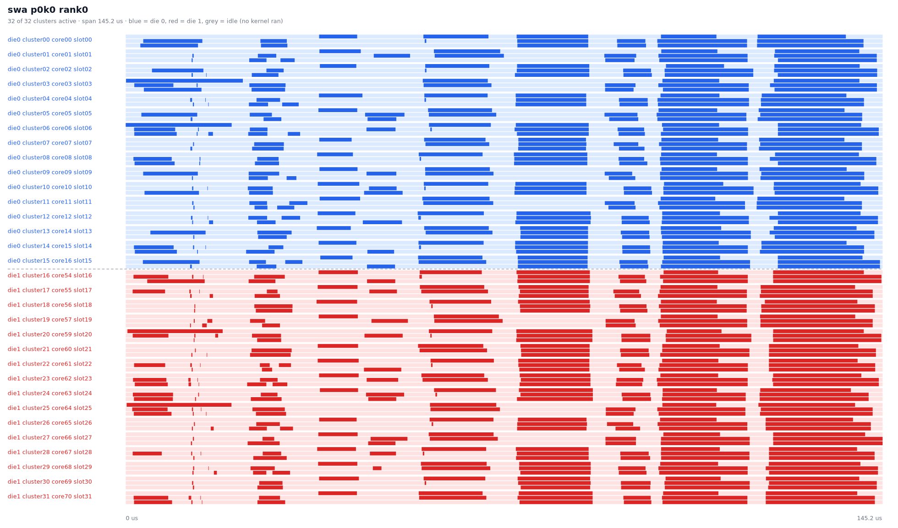
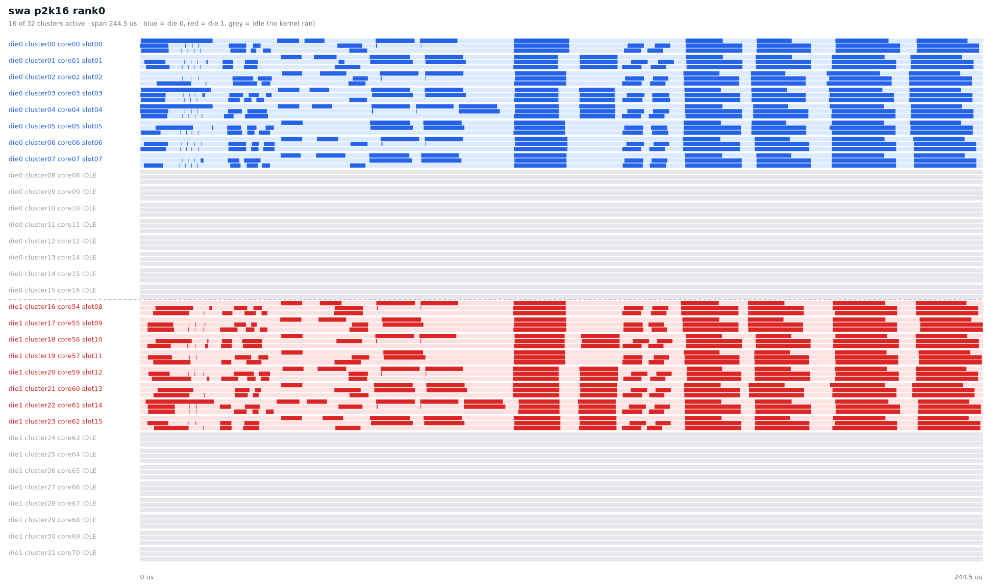

A5 Die 亲和性实测
Ascend950DT_9581 · percounter 运行时 · 每组 1 轮预热 + 10 轮测量 · 2026-11-24
1. 芯片 AICore 编号规则
芯片 2 块 Die，每块 18 个 AICore。一个 AICore = 1 个 AIC（矩阵核）+ 2 个 AIV（向量核），即 3 个小核。每块 Die 共 18×3 = 54 个核号。
| Die 0 核号 | 类型 | 规则 |
|---|---|---|
| 0 – 17 | AIC × 18 | 核号 = 组号 L |
| 18 – 53 | AIV × 36 | 18+2L、19+2L |
| Die 1 核号 | 类型 | 规则 |
|---|---|---|
| 54 – 71 | AIC × 18 | Die 0 整体 +54 |
| 72 – 107 | AIV × 36 |
例：L=0 → AIC 0，AIV 18、19；L=14 → AIC 14，AIV 46、47。
判断 Die：一次整除
die = 物理核号 ÷ 54
商 0 → Die 0；商 1 → Die 1。
核号由硬件决定，程序不分配：每个核启动后自读寄存器 get_coreid()，取低 12 位上报。
程序只取该组 AIC 的核号做除法；2 个 AIV 与它同在一个 AICore，Die 必然相同。
两套编号不要混
| 编号 | 谁定的 | 是否连续 | 本次实测值（0 号卡） |
|---|---|---|---|
| 物理核号 | 硬件 | 否，未启动的核留空号 | Die 0 AIC：0–12、14、15、16；Die 1 AIC：54–57、59–70 |
| cluster 号 | 程序启动时顺序排 | 是，0–31 | cluster 13 → 核 14；cluster 16 → 核 54 |
每块 Die 的 18 个 AIC 本次只启动 16 个（空号 13、17 和 58、71），所以 cluster 号与物理核号从第 13 号起错开。cluster 0–15 在 Die 0，16–31 在 Die 1。
2. 对比实验设计
三种策略启动的核数完全相同：都拉起 32 个 cluster（32 AIC + 64 AIV）。唯一差别是调度器允许哪些 cluster 领任务，未选中的标记 IDLE、启动后立即返回。
原方案
不挑选，32 个全部领任务
16 + 16
单 Die（K 个）
K 个全放 Die 0。一块 Die 本次只有 16 个，故 K ≤ 16
K=16 时：16 + 0
跨 Die（K 个）
每块 Die 各放 K/2，K 取偶数
K=16 时：8 + 8
Die 0 领任务Die 1 领任务IDLE每格代表 2 个 cluster
对比口径
- 公平点在同一个 K：参与计算的 cluster 数一样，只换它们落在一块 Die 还是两块 Die。
- 指标：L0 aicore_wall，第一个业务 kernel 开始到最后一个结束。10 轮平均，单点波动 0.11%–2.69%。
- K 取点：2、4、8、12、16 做单 Die / 跨 Die 对比；跨 Die 另测 20、24、28、32 看扩展性，K=32 与原方案等宽作对照。
- 互不污染：计时运行不开剖析；泳道图来自另一轮独立运行。
3. 对比结果
单位 µs。差异 = 跨 Die ÷ 单 Die − 1，负值表示跨 Die 更快。
swa
| K | 单 Die | 跨 Die | 差异 |
|---|---|---|---|
| 2 | 1423.0 | 1427.2 | +0.30% |
| 4 | 730.1 | 726.8 | −0.45% |
| 8 | 395.5 | 395.0 | −0.12% |
| 12 | 300.0 | 298.9 | −0.36% |
| 16 | 245.8 | 240.7 | −2.06% |
| 20 | — | 211.8 | |
| 24 | — | 197.1 | |
| 28 | — | 193.7 | |
| 32 | — | 143.1 |
engram
| K | 单 Die | 跨 Die | 差异 |
|---|---|---|---|
| 2 | 1010.4 | 1007.6 | −0.27% |
| 4 | 527.2 | 523.7 | −0.68% |
| 8 | 292.0 | 287.4 | −1.58% |
| 12 | 216.0 | 212.4 | −1.67% |
| 16 | 178.6 | 169.6 | −5.07% |
| 20 | — | 139.2 | |
| 24 | — | 138.4 | |
| 28 | — | 108.7 | |
| 32 | — | 101.8 |
K ≥ 20 无单 Die 对照：Die 0 本次只有 16 个 cluster，放不下。
跨 Die 相对单 Die 的差异（负值 = 跨 Die 更快）
满宽对照：原方案 vs 跨 Die 16+16（核数相同）
| 用例 | 栅栏组 | 原方案 | 跨 Die K=32 | 差异 | 两组波动 |
|---|---|---|---|---|---|
| engram | 0 | 101.7 | 101.8 | +0.10% | 2.69% / 2.38% |
| swa | 0 | 141.0 | 143.1 | +1.53% | 1.14% / 2.33% |
| c1a_reuse | 1 | 147.9 | 150.1 | +1.52% | 0.92% / 1.30% |
| c2a_full | 2 | 190.9 | 192.1 | +0.63% | 1.99% / 1.74% |
| c1a_reindex | 1 | 238.3 | 242.6 | +1.79% | 0.75% / 2.41% |
| layers_19_21 | 1 | 1875.6 | 1875.6 | +0.00% | 0.57% / 0.87% |
差异 +0.00% ~ +1.79%，均未超过各自波动 → 按 Die 挑选这件事本身不花时间。layers_19_21 为双卡用例，取两卡较慢者。
4. 结果分析
| 结论 | 证据 |
|---|---|
| 跨 Die 更快，核越多越明显 | engram 从 K=8 起稳定领先，K=16 达 −5.07%；swa 在 K=16 达 −2.06%，超出本组波动（1.28% / 0.62%） |
| 跨 Die 本身不带固定开销 | K=2 时 swa +0.30%、engram −0.27%，都在波动内。若跨 Die 搬数有固定代价，核最少时应最明显，实测没有 |
| 调度机制在满宽时零代价 | 六个用例「跨 Die 16+16 vs 原方案」差异 +0.00% ~ +1.79%，均未超过波动 |
为什么跨 Die 比单 Die 快
关键在每块 Die 的内存通道和片上缓存是各自独立的。同样 K 个 cluster：
- 单 Die：K 个全部争用同一块 Die 的通道与缓存。
- 跨 Die：拆成两半，各用各的通道与缓存，可用容量翻倍。
所以 K 小时通道没用满，两者持平；K 大时单 Die 先撞上通道上限，跨 Die 才拉开差距。差距随 K 单调变大（engram：−0.27% → −1.58% → −5.07%），与这个解释一致。
佐证：核数翻倍带不来翻倍速度
横轴 K（等距排列，每格核数翻倍），纵轴相对本组 K=2 的加速比。实线 = 跨 Die，点线 = 单 Die，灰虚线 = 理想线性。单 Die 最多 16 个 cluster，故曲线止于 K=16。
核数从 2 增到 32 是 16 倍，跨 Die 实测只快约 10 倍（swa 9.97×、engram 9.90×）。高核数段已不靠加核提速，与「先撞通道上限」一致。
单 Die 与跨 Die 两条线在本图量程下几乎重合——两者差距只有 0.3%–5%，而纵轴跨度是 16 倍，看不出来属正常。差距本身请看上方柱状图；本图只用来说明两种策略都远达不到线性加速，且 K=16 时单 Die 已掉得更多（swa 5.79× vs 5.93×，engram 5.66× vs 5.94×）。
本次未采集缓存未命中与带宽计数。上述机理是由「K=2 持平、差距随 K 单调变大、加速比偏离线性」三点推出，非计数器直接测得。
5. 补充说明：其余用例为何无法对比
| 用例 | 做到哪步 | 原因 |
|---|---|---|
| swa、engram | 单 Die / 跨 Die 全 K 对比 | 任务图无栅栏，宽度可任意收窄 |
| c1a_reuse、c1a_reindex c2a_full、layers_19_21 | 仅满宽 K=32 | 含 sync-start 栅栏：一个任务的全部分块必须同时在位。录制时按 32 个 cluster 写死了分块数，回放改不了；给 16 个会死锁，守卫直接拒绝 |
| moe | 未测 | 运行时现场建图，未接入 Die 参数；且该图在窄于 32 的宽度下会中途停住 |
栅栏那四组曾按 8、10、12、14、16、20、24 重新录制整段前向，七个宽度全部停在同一点（90 个终点任务只完成 86 个）。其中宽度 10 和 14 的任务图结构与成功的 32 宽完全一致，仍然停住 → 限制在模型侧，不在 Die 调度。
6. 实验泳道图（swa，K=16）
先看占用：一眼看出 Die 约束生效
原方案
32 个全满 · 141.0 µs
单 Die K=16
Die 1 整片空 · 245.8 µs
跨 Die K=16
两 Die 对称各 8 · 240.7 µs
Die 0 有任务Die 1 有任务IDLE每格 2 个 cluster
原始泳道
每行 1 个 cluster，行内 3 条细条自上而下为 AIC、AIV0、AIV1。蓝 = Die 0，红 = Die 1，灰 = IDLE。纵轴 cluster / core 来自 AICPU 上报的物理核号，色块来自每个 kernel 的真实起止时间，两者活跃集已比对一致。



图中 AIC_0、AIV_32 是启动序号而非物理核号——32 个 AIC 占 0–31，AIV 自 32 起，故 cluster 0 的两个向量核为 AIV_32、AIV_33。engram 及其余 K 的同款图、以及可缩放的 .perfetto.json（用 ui.perfetto.dev 打开）保留在原始输出目录 outputs/die-affinity/swimlanes/，未随本报告打包。